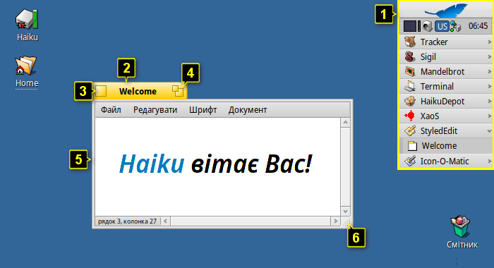
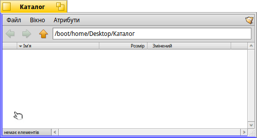
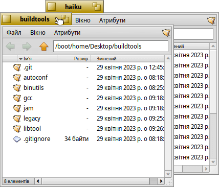
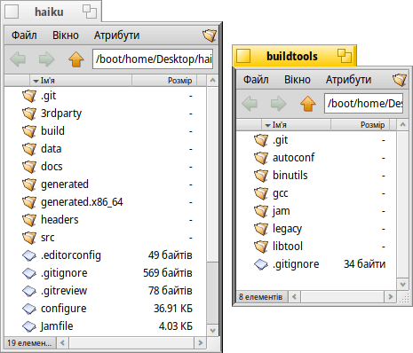
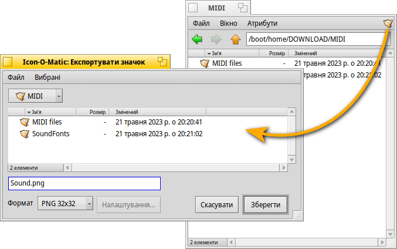
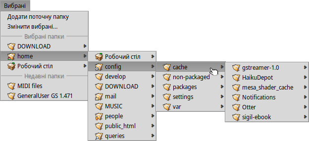
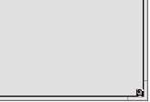

| Індекс |
|
Переміщення та зміна розмірів Згуртувати & Склеїти Панелі файлових діалогів Репліканти |
Графічний інтерфейс користувача Haiku
Графічний інтерфейс користувача Haiku є невід'ємною частиною системи. На відміну від інших Unix-подібних операційних систем, у Haiku немає окремого віконного менеджера і, загрузка просто в оболонку командного рядка неможлива. Оскільки Haiku орієнтована саме на графічну складову інтерфейсу, це просто не вважається необхідним.
Оскільки Ви, ймовірно, маєте досвід роботи з іншими графічними середовищами, давайте оминемо такі стандарти, як меню, контекстне меню правою кнопкою миші, drag&drop, тощо. Натомість розглянемо декілька унікальних аспектів графічного інтерфейсу Haiku.
У графічному інтерфейсі Haiku є лише кілька речей, які не є очевидними і заслуговують на пояснення.
Deskbar – це меню «Пуск» і панель задач Haiku, якщо хочете. Перегляньте розділ Deskbar.
- Жовтий заголовок (вкладка) пропонує більше, ніж просто назву програми чи файлу документа:
- Ви можете переміщати його, утримуючи клавішу SHIFT під час перетягування в іншу позицію, що дає змогу об'єднати декілька вікон і зручно отримувати доступ до них за допомогою іменованих вкладок.
- Згорнути вікно можна подвійним кліком миші на його заголовку (або комбінацією клавіш CTRL ALT M). Доступ до такого прихованого вікна можна отримати через список запущених програм панелі задач Deskbar або через Twitcher.
- Ви можете відправити вікно на задній план, зробивши клік правою кнопкою миші на його заголовку (або на його рамці).
Кнопка закриття вікна.
Кнопка «збільшити» (або CTRL ALT Z). У більшості програм вона розгорне вікно до максимального розміру, не закриваючи при цьому панель задач Deskbar (утримуйте клавішу SHIFT, щоб закрити і її). Втім, це не обов'язково. Наприклад, вікна Tracker змінять розмір так, щоб найкраще відповідати своєму вмісту.
Рамка вікна. Перетягування лівою кнопкою миші переміщує вікно, правою – змінює розмір.
Експандер зміни розміру вікна.
 Швидкий спосіб переміщення або зміни розміру вікон
Швидкий спосіб переміщення або зміни розміру вікон
Переміщення та зміна розмірів вікон є важливою частиною взаємодії з кількома одночасно запущеними програмами. Замість того, щоб націлюватися на маленькі елементи жовтого заголовка чи ще меншу рамку вікна, є більш зручний спосіб переміщення вікна. Крім того, окрім невеликого розміру, експандер зміни розміру має ще одне обмеження: Він дозволяє змінювати розмір лише у напрямку правого нижнього кута.
Перетягування рамки правою кнопкою миші для зміни розміру працює, але Вам знову доведеться ретельно прицілюватися.
Для вирішення цих проблем Haiku пропонує зручне рішення за допомогою комбінації клавіш управління вікнами CTRL ALT та миші. Дивіться також розділ Клавіші швидкого доступу для отримання додаткової інформації про комбінації клавіш для управління вікнами.
Утримуючи натиснутими клавіші CTRL ALT, Ви виділяєте кольором межі вікна, найближчі до курсора миші. Переміщення миші до іншої межі змінить напрямок. Натисніть праву кнопку миші і перетягніть маніпулятор, щоб змінити розмір вікна вздовж виділених кольором меж.
Утримуючи натиснутими клавіші CTRL ALT, натисніть ліву кнопку миші і перетягніть маніпулятор, щоб перемістити вікно. Швидкий клік правою кнопкою миші повертає його назад.
Згуртувати & Склеїти
Інтерфейс користувача Haiku має унікальну функцію, яка ідеально використовує той факт, що вікна мають жовтий заголовок у вигляді вкладки а не заголовок на всю ширину вікна. Ця функція називається «Згуртувати & Склеїти».
У наведеному нижче прикладі вікно Tracker з закладками склеєно з вікном WebPositive, яке, у свою чергу, згуртовано з іншим вікном Tracker, що показує вміст папки haiku. У цій анімації користувач клацає на закладках згуртованих вікон, щоб по черзі виводити то одне, то інше на передній план.
З'єднану таким чином групу вікон можна переміщати і змінювати їхній розмір разом – це дуже зручно для роботи в середовищі, більш орієнтованому на проект. Замість того, щоб шукати потрібне вікно браузера з документацією, вікнами редактора, файлового менеджера і, можливо, пошту з електронним листом, який має відношення до Вашого робочого проекту, просто об'єднайте їх разом.
Власне впорядкувати вікна дуже просто: утримуючи клавішу OPT, перетягніть вікно за його заголовок впритул до заголовка або рамки іншого вікна, доки воно не змінить колір, і відпустіть кнопку миші.
«Згуртувати & Склеїти» складається з двох взаємопов'язаних частин.
|  | «Згуртувати» – це накладання вікон одне на одне з автоматичним переміщенням жовтих заголовків вікон у потрібне положення. |
|  | «Склеїти» означає склеювання вікон по горизонталі або вертикалі. |
Щоб розгрупувати/розклеїти вікна, утримуйте клавішу OPT і перетягніть вікно з групи за жовтий заголовок.
Панелі файлових діалогів
При відкритті або збереженні файлу у будь-якій програмі, відкривається ось така панель:
Тут є все, як завжди: Список файлів поточної папки для вибору; якщо це панель збереження, текстове поле для введення назви файлу і список який розкривається для різних форматів файлів та їхніх налаштувань.
Ви можете перейти до батьківських папок через список який розкривається над списком файлів.
Якщо у Вас вже відкрито вікно Tracker з місцем розташування файлу, Ви можете просто перетягнути будь-який файл або представлення папки (тобто крайній символ у правому куті головного меню вікна) на панель. У панелі відкриється нове місце розташування.
Клавіатурні скорочення
Багато клавіатурних скорочень у файлових діалогах відкриття та збереження також використовуються в Tracker. Окрім команд, які також доступні через меню , є кілька не таких очевидних:
| ALT N | Створює нову папку. | |
| ALT E | Дозволяє перейменувати вибраний елемент. | |
| ALT ↑ | Відкриває батьківський каталог. | |
| ALT ↓ або ENTER | Відкриває вибрану папку. | |
| ALT D | Переходить на робочий стіл. | |
| ALT H | Переходить до каталогу Home. |
Щоб дізнатися про комбінації клавіш у Haiku, дивіться розділ Клавіші швидкого доступу.
Вибрані та недавні папки
Меню на панелях файлових діалогів відкриття і збереження містить нещодавно відвідані папки і вибрані місця, які Ви можете налаштувати самостійно. Маленька стрілка показує, що Ви можете використовувати навігацію через деталізацію ієрархії підменю.
Щоб додати папку у меню , просто перейдіть до потрібної Вам папки та виберіть пункт . Відтепер вона з'являтиметься на кожній панелі відкриття/збереження. Щоб прибрати папку з меню, виберіть пункт і видаліть папку зі списку.
Усі вибрані папки зберігаються у /boot/home/config/settings/Tracker/Go/. Тож Ви можете додавати і видаляти символьні посилання на файли і папки безпосередньо там.
Репліканти
Репліканти – це невеликі самодостатні частини програм, які можна інтегрувати на робочий стіл або інші програми. Якщо у меню панелі задач Deskbar увімкнено опцію , Ви розпізнаєте реплікант програми за невеликим маркером, який зазвичай знаходиться у правому нижньому куті:
Найпомітніше місце, яке приймає репліканти – це Робочий стіл: Просто перетягніть на нього маркер. Відтепер він є частиною робочого столу і для роботи репліканта не потрібно запускати основну програму.
Зробіть правий клік миші на значку репліканта, щоб викликати контекстне меню, у якому буде показано пункт і пункт . Інший спосіб видалити реплікант з робочого стола – просто перетягнути його на значок смітника.
Прикладами програм з реплікантами є графіки ActivityMonitor, аплет Workspaces або DeskCalc.